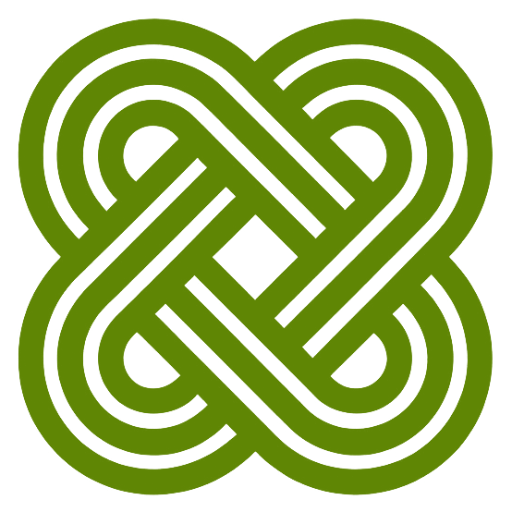
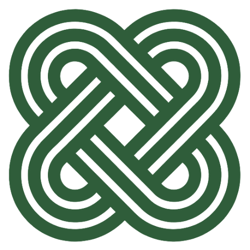
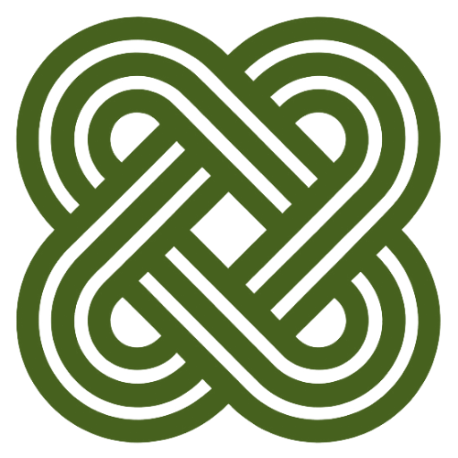

Direction & decisions
Olive is locked and the secondary palette is retired. Two things refined here — the line we lead with, and the influences we're drawing from. Click a tagline to preview it.
The green is olive
Per your call, olive holds — #5F8604, sampled straight from the logo, so every existing asset stays valid as-is. Forest and moss are shown for the record only.



Retiring “place-strengthening”
Agreed — it's clunky. The descriptor goes back to plain language, and the lead line carries the mission. Your reference brands (and your own ecosystem) point clearly to one register: the common good. Click any line to preview it in the masthead.
“Place-strengthening” retired. “Mission-aligned” is plainer, already live on your site, and stays functional. Keep this separate from the tagline: the wordmark stays descriptor-free, and this swappable line scales from advisory through principal, GP / co-GP, JV, and SPV roles. The tagline sets tone; the capability line states the offer.
What we're drawing from
Your three references work in different sectors but share one ethos — and Virtuous Cycle already speaks its language. We keep the colors exactly as they are; what we borrow is tone, structure, and posture. (Read from each brand's voice and architecture; if you want me to match specific visual details, send screenshots and I'll pull them precisely.)
- Triadic framing for VC: land · livelihood · common good.
- A clear “what we do” + markets grid, warm and data-driven.
- The hero as one confident sentence, not a slogan.
- Posture: “envision the possible, then build it.”
- The common-good / flourishing vocabulary, made concrete.
- Restraint: lots of air, one warm note, ideas first.
One family of marks, around a common-life idea
convivium means a shared table — conviviality, common life — which sits naturally beside “the common good.” These should feel related, not identical. As you've offered, jjacquay.com can flex toward VC's olive + type system to read as the person behind the firm; bluffline.org shares the Gulf-Coast place and palette even where you don't control it. Recommendation: harmonize type and the olive/neutral ground across what you own; let each keep its own name and mark.
The type system
Move from three families to two — one serif that speaks, one sans that explains. Your references lean clean, humane, and sans-forward; A (Spectral + Inter) best matches that civic, contemporary read. Same words across all three so the comparison is pure type.
The evidence suggests a corridor commitment must be locked before negotiation, not after. Informal assurances do not survive a change in counterparty.
The evidence suggests a corridor commitment must be locked before negotiation, not after. Informal assurances do not survive a change in counterparty.
The evidence suggests a corridor commitment must be locked before negotiation, not after. Informal assurances do not survive a change in counterparty.
One hue, a family of tones
Agreed — a richer green reads better than a lone accent. So the palette expands within the olive family: a tonal ramp from pale sage to deep field, all the same hue, no off-family colors. Olive stays the anchor; the lighter and darker tones do the supporting work amber and navy used to.